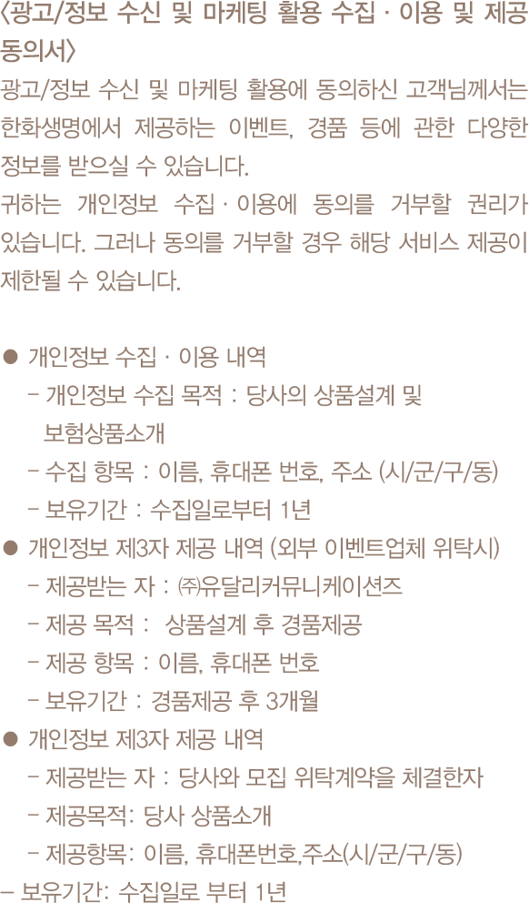

-


-
청약시 보험계약 기본사항 확인
계약자께서는 보험계약을 청약할 때 보험상품명, 보험기간, 보험료, 보험료 납입기간, 피보험자등을 반드시 확인하시고 보험상품 내용을 설명 받으시기 바랍니다.
청약철회 청구제도 안내
계약자는 보험증권을 받은 날부터 15일 이내에 청약을 철회할 수 있으며, 이 경우 회사는 청약의 철회를 접수한 날부터 3일이내에 납입한 보험료 전액을 돌려드립니다. 다만, 진단계약, 전문보험계약자가 체결한 계약 또는 청약을 한날로부터 30일(다만, 청약시점에 만 65세 이상인 계약자가 전화를 이용하여 계약을 체결한 경우 청약을 한 날부터 45일)을 초과하는 경우에는 청약철회가 제한됩니다.
계약전 알릴의무 준수
계약자 또는 피보험자는 보험계약을 청약할 때 청약서에 질문한 사항(계약전 알릴 사항)에 대하여 사실대로 알려야 하며 고의 또는 중대한 과실로 중요한 사항에 대하여 사실과 다르게 알린 경우에는 회사가 별도로 정하는 방법에 따라 계약을 해지하거나 보장을 제한할 수 있습니다.
보험품질 보증제도(3대 기본 지키기)에 관한 안내
보험계약을 청약할 때 약관과 계약자 보관용 청약서를 전달받지 못하였거나 약관의 중요한 내용을 설명받지 못한 때 또는 청약서에 자필서명(전자서명 또는 공인전자서명 포함)을 하지 않은 때에는 계약자가 계약이 성립한 날부터 3개월 이내에 계약을 취소할 수 있으며, 이 경우 이미 납입한 보험료를 돌려드리며, 보험료를 받은 기간에 대한여 소정의 이자를 더하여 지급합니다
다만, 납입면제가 된 경우에는 보험계약자가 실제로 납입한 보험료를 돌려드립니다.
배당에 관한 안내
이 상품은 무배당 보험으로 배당이 없는 대신 보험료가 저렴합니다.
해지환급금이 적은 이유
보험은 은행의 저축과 달리 위험보장과 저축을 겸하는 제도로서, 계약자가 납입한 보험료 중 일부는 불의의 사고를 당한 다른 가입자에게 보험금으로 지급되며 또 다른 일부는 보험회사 운영에 피료한 경비로 사용되므로 중도해지시 지금되는 해지환급금은 납입한 보험료보다 적거나 없을 수 있습니다.
세제혜택
근로소득자가 기본공제대상자를 피보험자로 하여 이 보험에 가입한 경우에는 당해년도에 납입하신 보장성보험료에 대해서 세액공제 혜택을 받으실 수 있습니다.
기존 계약해지 후 신규 계약 가입에 따른 안내
계약자가 기존에 체결했던 보험계약을 해지하고 다른 보험계약을 체결하면 보험인수가 거절되거나 보험료가 인상되거나 보장내용이 달라질 수 있습니다.
보험상담 및 분쟁조정안내
보험계약에 관한 불편사항 및 분쟁(민원)이 있을 경우, 먼저 우리회사 홈페이지(www.hanwhalife.com)에 신청하시거나, 다사 콜센터(1588-6363)로 연락주시면 성심껏 상담하여 드리겠습니다. 또한 보험계약 유지과정상 분쟁조정이 필요한 사항이 발생하거나 불만이 있을 경우에는 금융감독원(국번없이1332), 한국소비자원(02-3460-3000)등으로 연락하시기 바라며, 기타 보험과 관련된 문의사항은 생명보험협회(본부 02-2262-6600,www.klia.or.kr)를 통해 상담을 받을 수 있습니다.
예금자 보호안내
이 보험계약은 예금자보호법에 따라 예금보험공사가 보호하되, 보호 한도는 본 보험회사에 있는 귀하의 모든예금보호대상 금융상품의 해지환급금(또는 만기시 보험금이나 사고보험금)에 기타지급금을 합하여 1인당"최고 5천만원"이며, 5천만원을 초과하는 나머지 금액은 보호하지 않습니다. 또한, 보험계약자 및 보험료 납부자가 법인이면 보호되지 않습니다.
상기 보험상품관련 내용은 요약된 자료이므로 자세한 사항은 반드시 해당 보험약관, 보험증권과 상품설명서를 통하여 확인하시기 바랍니다
-
가입안내사항(주계약 기준)
(1) 1종(자녀생활비보장형)
구분 10년납 15년납 20년납 전기납 남자 20~27세 17년~35년 만기 18년~35년 만기 23년~35년 만기 32년~35년 만기 28~35세 27년~35년 만기 36~44세 21년~35년 만기 여자 20~27세 - 28~35세 33년~35년 만기 36~44세 28년~35년 만기 (2) 2종(알아서보장UP형)
(가) 보험기간 : 70세, 80세, 100세만기
(나) 납입기간 : 10년, 15년, 20년납
(다) 피보험자 가입나이 : 20세 ~ 44세
- 만기환급금이 없는 순수보장형 상품입니다.
1종(자녀생활비보장형)
(기준 : 보험가입금액 1억원)
급부명칭 지급사유 지급금액 생활자금 피보험자가 보험기간 중 사망한 경우 또는 장해분류표중 동일한 재해 또는 재해이외의 동일한 원인으로 여러 신체부위의 장해지급률을 더하여 80% 이상인 장해상태가 되었을 경우(최초 1회한) 지급사유 발생일을 포함하여 보험기간이 끝날 때까지 매월 지급사유 발생해당일에 100만원씩 지급
(단, 60회 보증지급)주) 1. 피보험자에게 보험기간 중 ‘생활자금’ 지급사유가 발생한 경우에는 이 계약은 그때부터 효력이 없습니다.
2. 보험료 납입기간 중 피보험자가 장해분류표 중 동일한 재해 또는 재해이외의 동일한 원인으로 여러 신체부위의 장해지급률을 더하여 50% 이상 80% 미만인 장해상태가 되었을 경우에는 차회 이후의 보험료 납입을 면제하여 드립니다.
3. ‘생활자금’에서 해당월의 지급사유 발생해당일이 없는 경우에는 해당월의 말일을 지급사유 발생해당일로 합니다.
※ 고의사고 및 2년이내 자살시 보험금 지급을 제한합니다
자녀생활비 암보장특약 무배당
(기준: 보험가입금액 2천만원)
급부명칭 지급사유 경과기간 지급금액 암진단
생활자금보험기간 중 피보험자가 암보장개시일 이후에 ‘유방암, 전립선암, 여성생식기암 및 직∙결장암’ 이외의 암(기타피부암, 갑상선암, 대장점막내암 제외)으로 진단이 확정되었을 경우
(최초 1회한)1년 미만 지급사유 발생일을 포함하여 매월 지급사유 발생해당일에 50만원씩 60회 확정지급 1년 이상 지급사유 발생일을 포함하여 매월 지급사유 발생해당일에 100만원씩 60회 확정지급 소액암진단
생활자금보험기간 중 피보험자가 암보장개시일 이후에 ‘유방암, 전립선암, 여성생식기암, 직∙결장암 및 초기 이외의 갑상선암’으로 진단이 확정되었을 경우(최초 1회한) 1년 미만 지급사유 발생일을 포함하여 매월 지급사유 발생해당일에 25만원씩 60회 확정지급 1년 이상 지급사유 발생일을 포함하여 매월 지급사유 발생해당일에 50만원씩 60회 확정지급 진단자금 보험기간 중 피보험자가 보장개시일 이후에 ‘기타피부암’으로 진단이 확정되었을 경우(최초 1회한) 1년 미만 50만원 1년 이상 100만원 보험기간 중 피보험자가 보장개시일 이후에 ‘초기갑상선암’으로 진단이 확정되었을 경우(최초 1회한) 1년 미만 50만원 1년 이상 100만원 보험기간 중 피보험자가 보장개시일 이후에 ‘대장점막내암’으로 진단이 확정되었을 경우(최초 1회한) 1년 미만 50만원 1년 이상 100만원 보험기간 중 피보험자가 보장개시일 이후에 ‘제자리암’으로 진단이 확정되었을 경우(최초 1회한) 1년 미만 50만원 1년 이상 100만원 보험기간 중 피보험자가 보장개시일 이후에 ‘경계성종양’으로 진단이 확정되었을 경우(최초 1회한) 1년 미만 50만원 1년 이상 100만원 주) 1. 이 특약의 보험료 납입기간 중 이 특약의 피보험자가 암보장개시일 이후에 ‘유방암, 전립선암, 여성생식기암 및 직∙결장암’ 이외의 암(기타피부암, 갑상선암, 대장점막내암 제외)으로 진단이 확정(다만, 유방암, 전립선암, 여성생식기암, 직∙결장암, 기타피부암, 갑상선암 또는 대장점막내암으로 진단이 확정되었을 경우에는 보험료 납입을 면제하여 드리지 않습니다)되거나 장해분류표 중 동일한 재해 또는 재해 이외의 동일한 원인으로 여러 신체부위의 장해지급률을 더하여 50% 이상 장해상태가 되었을 경우에는 이 특약의 차회 이후의 보험료 납입을 면제하여 드립니다. 또한, 이 특약의 피보험자와 주계약의 피보험자가 동일한 경우 이 특약의 보험료 납입기간 중 주계약의 보험료 납입이 면제된 경우에는 이 특약의 보험료 납입을 면제하여 드립니다.
2. 지급금액의 경과기간은 보험계약일부터 진단 확정일까지의 경과기간입니다.
3. 이 특약의 암보장개시일은 계약일(특약을 부활(효력회복)하는 경우 부활(효력회복)일)부터 그 날을 포함하여 90일이 지난 날의 다음 날로 합니다.
4. ‘대장점막내암’ 은 ‘제자리암’ 에 포함되지 않습니다.
5. ‘암진단 생활자금’ 및 ‘소액암진단 생활자금’에서 해당월의 지급사유 발생해당일이 없는 경우에는 해당월의 말일을 지급사유 발생해당일로 합니다.
6. 피보험자가 보험기간 중 사망하였을 경우에는 계약자에게 사망 당시의 책임준비금을 지급하고 이 특약은 소멸됩니다.
2종(알아서보장UP형)
(기준 : 보험가입금액 500만원)
급부명칭 지급사유 지급사유 발생시점 경과기간 지급금액 암진단자금 보험기간 중 피보험자가 암보장개시일 이후에 ‘유방암, 전립선암, 여성생식기암 및 직∙결장암’ 이외의 암(기타피부암, 갑상선암, 대장점막내암 제외)으로 진단이 확정되었을 경우(최초 1회한) 45세 계약해당일 전일까지 1년 미만 500만원 1년이상 1,000만원 45세 계약해당일부터 55세 계약해당일 전일까지 2,000만원 55세 계약해당일부터 보험기간 종료시까지 3,000만원 소액암 진단자금 보험기간 중 피보험자가 암보장개시일 이후에 ‘유방암, 전립선암, 여성생식기암, 직∙결장암 및 초기 이외의 갑상선암’으로 진단이 확정되었을 경우(최초 1회한) 45세 계약해당일 전일까지 1년 미만 250만원 1년이상 500만원 45세 계약해당일부터 55세 계약해당일 전일까지 1,000만원 55세 계약해당일부터 보험기간 종료시까지 1,500만원 진단자금 보험기간 중 피보험자가 보장개시일 이후에 ‘기타피부암’으로 진단이 확정되었을 경우(최초 1회한) 45세 계약해당일 전일까지 1년 미만 50만원 1년이상 100만원 45세 계약해당일부터 55세 계약해당일 전일까지 200만원 55세 계약해당일부터 보험기간 종료시까지 300만원 보험기간 중 피보험자가 보장개시일 이후에 ‘초기갑상선암’으로 진단이 확정되었을 경우(최초 1회한) 45세 계약해당일 전일까지 1년 미만 50만원 1년이상 100만원 45세 계약해당일부터 55세 계약해당일 전일까지 200만원 55세 계약해당일부터 보험기간 종료시까지 300만원 보험기간 중 피보험자가 보장개시일 이후에 ‘대장점막내암’으로 진단이 확정되었을 경우(최초 1회한) 45세 계약해당일 전일까지 1년 미만 50만원 1년이상 100만원 45세 계약해당일부터 55세 계약해당일 전일까지 200만원 55세 계약해당일부터 보험기간 종료시까지 300만원 보험기간 중 피보험자가 보장개시일 이후에 ‘제자리암’으로 진단이 확정되었을 경우(최초 1회한) 45세 계약해당일 전일까지 1년 미만 50만원 1년이상 100만원 45세 계약해당일부터 55세 계약해당일 전일까지 200만원 55세 계약해당일부터 보험기간 종료시까지 300만원 보험기간 중 피보험자가 보장개시일 이후에 ‘경계성종양’으로 진단이 확정되었을 경우(최초 1회한) 45세 계약해당일 전일까지 1년 미만 50만원 1년이상 100만원 45세 계약해당일부터 55세 계약해당일 전일까지 200만원 55세 계약해당일부터 보험기간 종료시까지 300만원 뇌출혈 진단자금 보험기간 중 피보험자가 보장개시일 이후에 ‘뇌출혈’로 진단이 확정되었을 경우(최초 1회한) 45세 계약해당일 전일까지 1년 미만 500만원 1년이상 1,000만원 45세 계약해당일부터 55세 계약해당일 전일까지 1,500만원 55세 계약해당일부터 보험기간 종료시까지 2,000만원 급성심근 경색증 진단자금 보험기간 중 피보험자가 보장개시일 이후에 ‘급성심근경색증’으로 진단이 확정되었을 경우(최초 1회한) 45세 계약해당일 전일까지 1년 미만 500만원 1년이상 1,000만원 45세 계약해당일부터 55세 계약해당일 전일까지 1,500만원 55세 계약해당일부터 보험기간 종료시까지 2,000만원 중기 이상 만성 신부전증 진단자금 보험기간 중 피보험자가 보장개시일 이후에 ‘중기 이상 만성신부전증’으로 진단이 확정되었을 경우(최초 1회한) 45세 계약해당일 전일까지 1년 미만 250만원 1년이상 500만원 45세 계약해당일부터 보험기간 종료시까지 1,000만원 중기 이상 만성간질환 진단자금 보험기간 중 피보험자가 보장개시일 이후에 ‘중기 이상 만성간질환’으로 진단이 확정되었을 경우(최초 1회한) 45세 계약해당일 전일까지 1년 미만 250만원 1년이상 500만원 45세 계약해당일부터 보험기간 종료시까지 1,000만원 중기 이상 만성폐질환 진단자금 보험기간 중 피보험자가 보장개시일 이후에 ‘중기 이상 만성폐질환’으로 진단이 확정되었을 경우(최초 1회한) 45세 계약해당일 전일까지 1년 미만 250만원 1년이상 500만원 45세 계약해당일부터 보험기간 종료시까지 1,000만원 당뇨병 진단자금 보험기간 중 피보험자가 보장개시일 이후에 ‘당뇨병(당화혈색소 기준)’으로 진단이 확정되었을 경우(최초 1회한) 45세 계약해당일 전일까지 1년 미만 50만원 1년이상 100만원 45세 계약해당일부터 보험기간 종료시까지 200만원 주) 1. 피보험자가 보험료 납입기간 중 장해분류표 중 동일한 재해 또는 재해 이외의 동일한 원인으로 여러 신체부위의 장해지급률을 더하여 50% 이상 장해상태가 되었을 경우에는 이 계약의 차회 이후의 보험료 납입을 면제하여 드립니다.
2. 지급금액의 경과기간은 보험계약일부터 진단 확정일까지의 경과기간입니다.
3. 상기 보험금 지급기준표의 보험금은 해당 질병으로 진단이 확정되었을 경우 그 진단일의 피보험자의 보험나이에 따라 차등되어 지급됩니다. 이 경우 피보험자의 보험나이는 약관 제30조(보험나이)에서 정하는 보험나이로 합니다.
4. 암보장개시일은 계약일(계약을 부활(효력회복)하는 경우 부활(효력회복)일)부터 그 날을 포함하여 90일이 지난 날의 다음 날로 합니다.
5. ‘대장점막내암’ 은 ‘제자리암’ 에 포함되지 않습니다.
6. ‘당뇨병(당화혈색소 기준)’이라 함은 당화혈색소(HbA1c) 6.5% 이상을 만족하는 당뇨병으로 진단받은 경우를 말합니다.
7. 피보험자가 보험기간 중 사망하였을 경우에는 계약자에게 사망 당시의 책임준비금을 지급하고 이 계약은 소멸됩니다.
-
1종(자녀생활비보장형)
(기준: 가입금액 1억원, 25년만기, 월납, 20년납, 단위:원)
구분 30세 35세 40세 남자 29,000 37,000 49,000 여자 20,000 23,000 28,000 자녀생활비 암보장특약 무배당
(기준: 가입금액 2천만원, 25년만기, 월납, 20년납, 단위:원)
구분 30세 35세 40세 남자 13,600 19,800 29,200 여자 15,000 18,000 21,400 2종(알아서보장UP형)
(기준: 가입금액 5백만원, 80세만기, 월납, 20년납, 단위:원)
구분 30세 35세 40세 남자 44,900 50,200 55,900 여자 28,250 31,350 34,550 -
1종(자녀생활비보장형)
(보험가입금액 1억원, 남자, 35세, 25년만기, 20년납)
경과기간 나이 납입한보험료(원) 해지환급금(원) 환급률(%) 1년 36세 444,000 - 0.0 3년 38세 1,332,000 - 0.0 5년 40세 2,220,000 82,000 3.6 7년 42세 3,108,000 587,000 18.8 10년 45세 4,440,000 778,200 17.5 20년 55세 8,880,000 1,411,000 15.8 25년 60세 8,880,000 - 0.0 ※ 이 보험계약을 중도해지할 경우 해지환급금은 납입한 보험료에서 경과된 기간의 위험보험료, 계약체결 및 계약관리비용(해지공제금액 포함)이 차감되므로 이미 납입한 보험료보다 적거나 없을수도 있습니다.
※ 주계약 및 특약의 산출이율은 연복리 2.5%입니다.
※ 상기 예시된 금액 및 환급률 등이 미래의 수익을 보장하는 것은 아닙니다.
자녀생활비 암보장특약
(보험가입금액 2천만원, 남자, 35세, 25년만기, 20년납)
경과기간 나이 납입한보험료(원) 해지환급금(원) 환급률(%) 1년 36세 237,600 - 0.0 3년 38세 712,800 182,000 25.5 5년 40세 1,188,000 518,200 43.6 7년 42세 1,633,200 846,200 50.8 10년 45세 2,376,000 1,154,200 48.5 20년 55세 4,752,000 1,517,800 31.9 25년 60세 4,752,000 - 0.0 ※ 상기 해지환급금 예시표는 '유방암, 전립선암, 여성생식기암 및 직·결장암' 이외의 암(기타피부암, 갑상선암, 대장점막내암 제외) 미발생시 기준이며, '유방암, 전립선암, 여성생식기암 및 직·결장암' 이외의 암(기타피부암, 갑상선암, 대장점막내암 제외) 발생시 해지환급금은 발생 후 기준으로 산출한 금액으로 변경됩니다.
※ 이 보험계약을 중도해지할 경우 해지환급금은 납입한 보험료에서 경과된 기간의 위험보험료, 계약체결 및 계약관리비용(해지공제금액 포함)이 차감되므로 이미 납입한 보험료보다 적거나 없을수도 있습니다.
※ 주계약 및 특약의 산출이율은 연복리 2.5%입니다.
※ 상기 예시된 금액 및 환급률 등이 미래의 수익을 보장하는 것은 아닙니다.